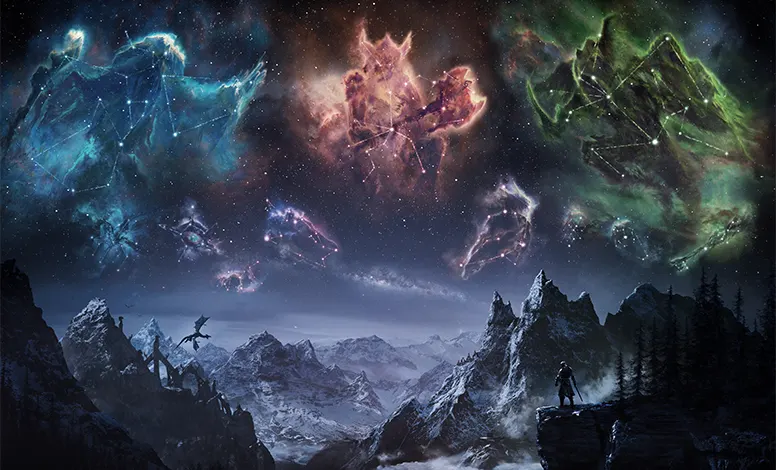

Este é um site fictício e amador apenas para fins de prática durante meu aprendizado de HTML e CSS, sem fins lucrativos, apenas didáticos, com o tema de um dos meus jogos favoritos.
The Elder Scrolls - Skyrim é um jogo épico de mundo aberto, que pode ser jogado em primeira ou terceira pessoa, podendo o jogador escolher a raça do seu personagem entre humanos, elfos, orcs e muito mais, além da classe de seu personagem entre mago, arqueiro, guerreiro com armas pesadas de uma mão ou armas leves em ambas as mãos. Além disso cada característica física do seu personagem pode ser escolhida.
Skyrim é um jogo cheio de aventura, emoção e infinitas possibilidades!
ÚLTIMAS NOTÍCIAS:

THE ELDER SCROLLS V: SKYRIM SPECIAL EDITION - NOTAS DO PATCH DA ATUALIZAÇÃO DAS CRIAÇÕES
Esta atualização da Skyrim Special Edition introduz as Criações Bethesda Game Studios, uma plataforma melhorada para criar e compartilhar conteúdo feito pela comunidade, assim como suporte para Steam Deck e suporte para monitores ultrawide para jogadores de PC.
CRIEM, COMPARTILHEM E ENCONTREM CONTEÚDO DA COMUNIDADE NA SKYRIM SPECIAL EDITION COM O SISTEMA DE CRIAÇÕES BETHESDA GAME STUDIOS
As Criações são um serviço completo e aprimorado de conteúdo para baixar da Bethesda Game Studios que oferece aos fãs da Skyrim Special Edition mais maneiras de jogar.